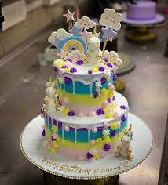

Services
Delivery
At Sweet Delights Bakery, we offer a delectable array of services designed to cater to every occasion and craving. Whether you’re looking for a quick morning treat or planning a grand celebration, our bakery has something to satisfy every palate. Our daily offerings include a tempting selection of freshly baked breads, from classic baguettes to artisan loaves infused with herbs and spices. Pair your bread with our assortment of homemade jams and spreads for a breakfast that’s truly exceptional. For those with a sweet tooth, our pastry counter is a haven of indulgence. Indulge in our buttery croissants, flaky danishes, and rich, creamy éclairs, each lovingly crafted to perfection. Need something more substantial? Our savory pies and quiches are made with hearty fillings and buttery, flaky crusts that are sure to satisfy. Planning a special occasion? Our custom cake services are tailored to make your celebration truly unforgettable. Whether it’s a wedding, birthday, or anniversary, our talented cake artists will work with you to create a masterpiece that reflects your personal style and taste. From elegant tiered cakes adorned with fresh flowers to whimsical designs that capture your unique vision, we specialize in turning your sweet dreams into reality. And let’s not forget our seasonal specialties! From gingerbread houses during the holidays to delicate pastel-colored macarons in the spring, Sweet Delights Bakery is always crafting something new and exciting to tempt your taste buds. Experience the magic of Sweet Delights Bakery today, where every bite is a taste of tradition and every visit is a celebration of flavor.

Custom Cakes
Celebrate any occasion with a beautiful and delicious custom cake designed to your specifications.
Wholesale
Looking to stock your store with delectable pastries? We offer wholesale options for businesses.
Online Ordering
Browse our selection and place your order easily through our user-friendly website.